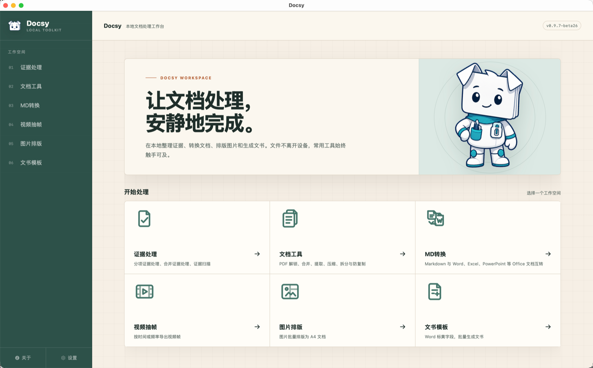
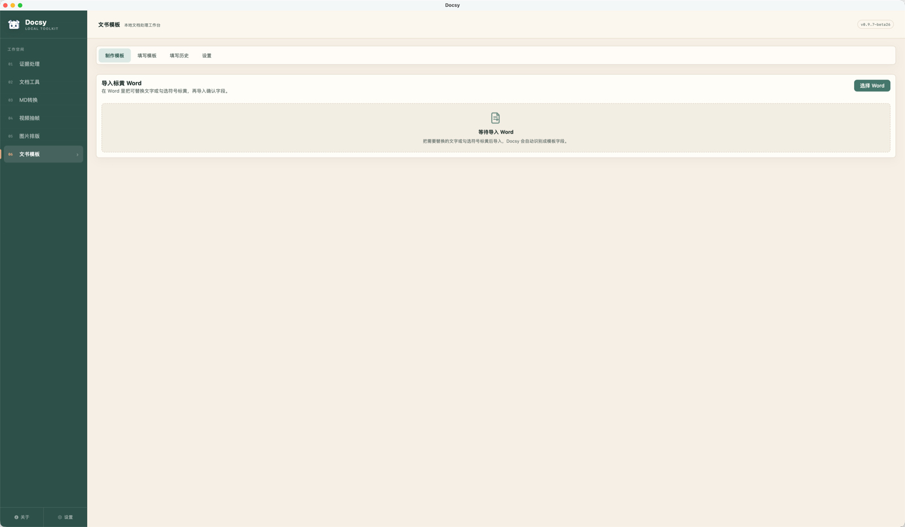
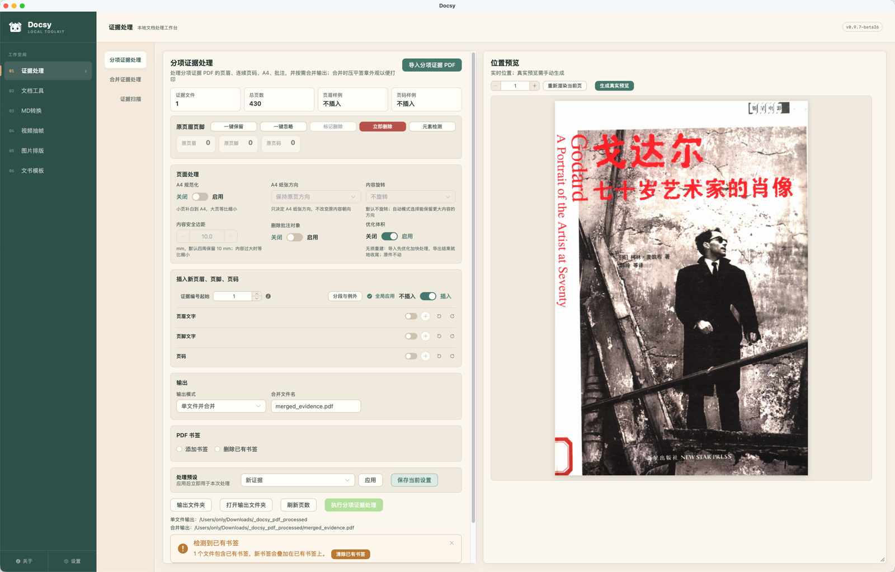
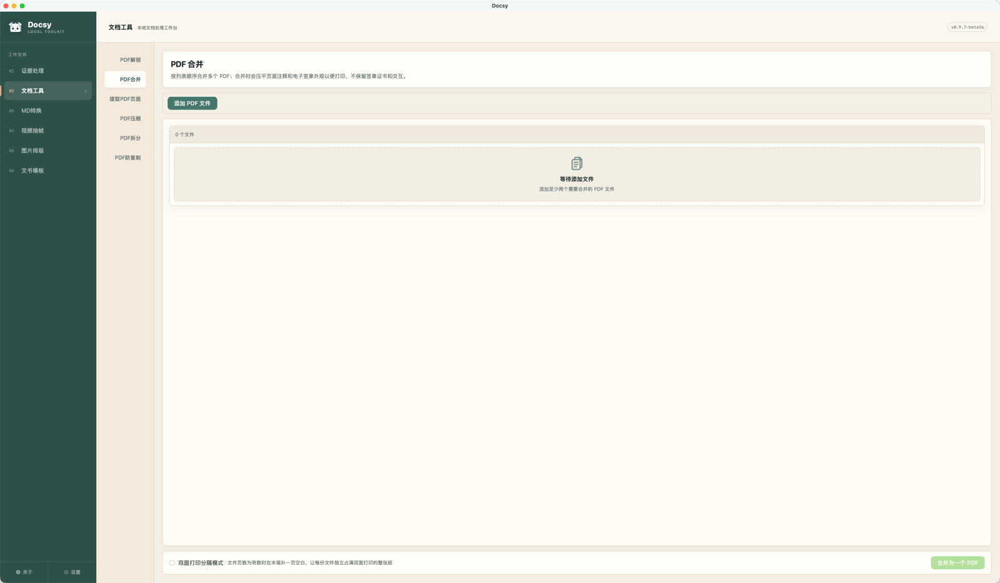
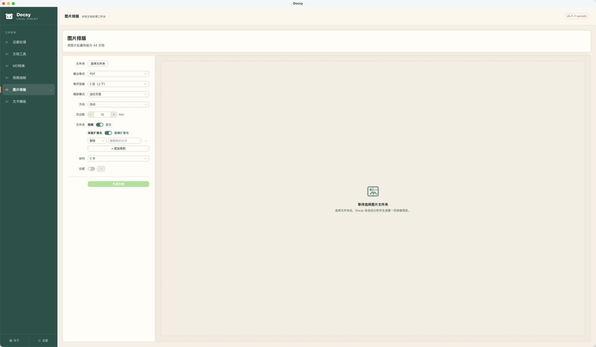
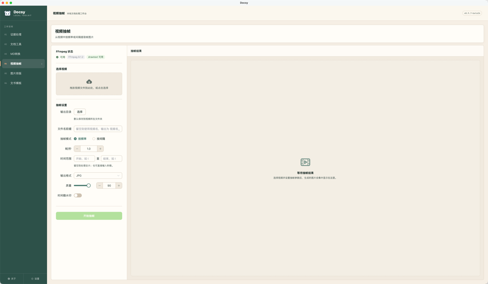
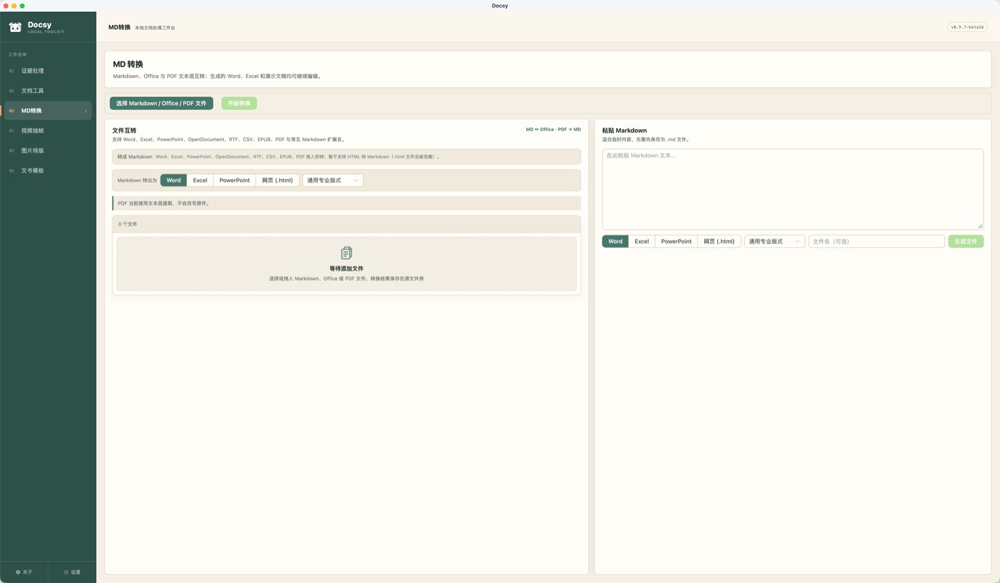

文书模板
Word 标黄即生成模板，按字段批量填写，一次导出几十份文书。
- 8 种字段类型，空字段自动清理
- 历史填写记录一键复用
六个模块覆盖高频场景，操作直观，所见即所得。
Word 标黄即生成模板，按字段批量填写，一次导出几十份文书。
页眉页脚智能检测、证据编号、合并拆分，律师整理证据一步到位。
解锁、合并、拆分、压缩、提取页面，拖拽排序，处理完原样保留。
照片、截图、扫描件批量排成整齐的 A4 文档，PDF 与 DOCX 双格式输出。
按时间范围或固定帧率截取画面，时间戳水印叠加，取证必备。
Markdown、Word 与 PDF 文本层双向转换，标题、表格、图片语义完整保留。
界面一览，直观感受 Docsy 的强大功能。

简洁直观的卡片式首页，功能模块一目了然，还有可爱的 Doclet 小宠物陪伴

Word 标黄即生成模板，8 种字段类型，批量填写导出几十份文书

页眉页脚智能检测，证据编号，合并拆分，律师整理证据一步到位

解锁、合并、拆分、压缩、提取页面，拖拽排序，处理完原样保留

照片、截图、扫描件批量排成整齐的 A4 文档，PDF 与 DOCX 双格式输出

按时间范围或固定帧率截取画面，时间戳水印叠加，取证必备

Markdown、Office 与 PDF 互转，标题、表格、图片语义完整保留
当前版本 v1.0.0，可选择直连 GitHub Releases 或镜像下载。
Apple 芯片（M 系列）· macOS 11+
Docsy_0.9.7-beta26_aarch64.dmg
17.5 MB
059dce476491ce3a6ed10c66ca25ec44e1795ad853a9a340a9feff2ea5eef43c
64 位 · Windows 10 / 11
Docsy_0.9.7-beta26_x64-setup.exe
12.1 MB
0e4a9b86f7ebde298d27496d86ec39706b565669aadcc99120439ad7a23bcdfb
持续迭代中，最新动态看这里。